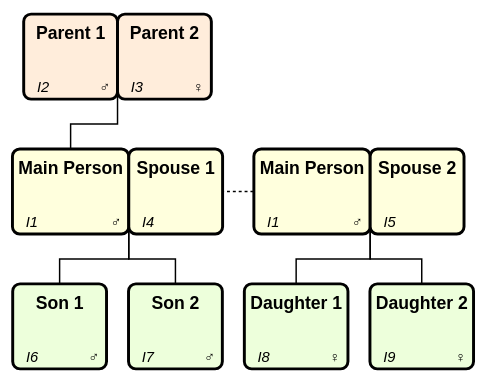

Introduction
We can find records using the family of get_*()
functions. Most of these are about finding familial relations to an
individual.
We illustrate their functionality using the family below consisting of three generations: A pair of parents who has a single child (named ‘Main Person’). This person forms two separate family groups with two spouses, each resulting in two children.
library(gedcomS7)
main_person <- IndividualRecord(pers_names = "Main Person", sex = "M")
three_gen <- new_gedcom() |>
push_record(main_person) |>
add_parents("@I1@", fath_name = "Parent 1", moth_name = "Parent 2") |>
add_spouse("@I1@", spou_name = "Spouse 1") |>
add_spouse("@I1@", spou_name = "Spouse 2") |>
add_children("@F2@", sexes = "MM", chil_names = c("Son 1", "Son 2")) |>
add_children("@F3@", sexes = "FF", chil_names = c("Daughter 1", "Daughter 2"))
#> New Individual record added with xref @I1@
#> New Family record added with xref @F1@
#> New Individual record added with xref @I2@
#> New Individual record added with xref @I3@
#> New Individual record added with xref @I4@
#> New Family record added with xref @F2@
#> New Individual record added with xref @I5@
#> New Family record added with xref @F3@
#> New Individual record added with xref @I6@
#> New Individual record added with xref @I7@
#> New Individual record added with xref @I8@
#> New Individual record added with xref @I9@
Image courtesy of Topola Genealogy Viewer (a great tool for visualising GEDCOM files!)
Immediate relations
The examples below illustrate the functions. All the functions return xrefs, so a helper function is created to convert xrefs for Individual records into the people’s names.
main_person <- "@I1@"
# Helper to convert xrefs to names
xref_to_name <- \(x) unlist(lapply(x, \(xref) pull_record(three_gen, xref)@PRIMARY_NAME))
get_indi_partners(three_gen, main_person) |> xref_to_name()
#> [1] "Spouse 1" "Spouse 2"
get_indi_parents(three_gen, main_person) |> xref_to_name()
#> [1] "Parent 1" "Parent 2"
get_indi_children(three_gen, main_person) |> xref_to_name()
#> [1] "Son 1" "Son 2" "Daughter 1" "Daughter 2"
get_indi_siblings(three_gen, "@I6@") |> xref_to_name()
#> [1] "Son 2"
get_indi_siblings(three_gen, "@I6@", inc_half = TRUE) |> xref_to_name()
#> [1] "Son 2" "Daughter 1" "Daughter 2"
get_fam_as_child(three_gen, main_person)
#> [1] "@F1@"
get_fam_as_spouse(three_gen, main_person)
#> [1] "@F2@" "@F3@"
get_fam_partners(three_gen, "@F1@")
#> [1] "@I2@" "@I3@"
get_fam_children(three_gen, "@F2@")
#> [1] "@I6@" "@I7@"Many functions include a pedigrees parameter which
allows you to specify the types of relationships allowed (all are
allowed by default, specify “BIRTH” if you only want biological).
Allowed values for pedigrees are below.
unname(val_pedigree_types())
#> [1] "BIRTH" "ADOPTED" "FOSTER" "SEALING" "OTHER"If we add an adopted child to family “@F3@” we can see the difference this parameter makes:
adopted_child <- IndividualRecord(
pers_names = "Adopted child",
fam_links_chil = FamilyLinkChild(fam_xref = "@F3@", pedigree = "ADOPTED")
)
three_gen <- push_record(three_gen, adopted_child)
#> New Individual record added with xref @I10@
get_fam_children(three_gen, "@F3@") |> xref_to_name()
#> [1] "Daughter 1" "Daughter 2" "Adopted child"
get_fam_children(three_gen, "@F3@", pedigrees = "BIRTH") |> xref_to_name()
#> [1] "Daughter 1" "Daughter 2"
get_fam_children(three_gen, "@F3@", pedigrees = "ADOPTED") |> xref_to_name()
#> [1] "Adopted child"Distant relations
One of the more sophisticated features of gedcomS7 is
the ability to manipulate entire branches of your tree.
We can use the get_descendants() function to identify
the descendants of Main Person. By default it will exclude the
individual, all spouses, and all associated family records:
get_descendants(three_gen, "@I2@") # Parent 1
#> [1] "@I1@" "@I6@" "@I7@" "@I8@" "@I9@" "@I10@"Setting inc_part = TRUE will include all partners and
their descendants, and all descendants’ partners:
get_descendants(three_gen, "@I2@", inc_part = TRUE)
#> [1] "@I3@" "@I4@" "@I5@" "@I1@" "@I6@" "@I7@" "@I8@" "@I9@" "@I10@"Setting inc_indi = TRUE will include the individual:
get_descendants(three_gen, "@I2@", inc_indi = TRUE)
#> [1] "@I2@" "@I1@" "@I6@" "@I7@" "@I8@" "@I9@" "@I10@"Setting inc_fam = TRUE will include the individual’s
families where they are a spouse/child, and all descendants’
families:
get_descendants(three_gen, "@I2@", inc_fam = TRUE)
#> [1] "@F1@" "@F2@" "@F3@" "@I1@" "@I6@" "@I7@" "@I8@" "@I9@" "@I10@"We can deal with ancestors in a similar way using the
get_ancestors() function. There is also a
get_indi_cousins() function which allows you to find all
types of cousin for an individual.
Supporting records
Whilst the functions above focus on Individual and Family records,
the get_supporting_recs() function identifies all other
types of records referenced by a set of records.
For example, below we create three different types of supporting record; media, repository, and source. The source record is linked to both the media and repository record.
We then add a link to the source record in the record of Main Person.
supporting_media <- MediaRecord(
files = MediaFile("myfile.mp3", media_type = "audio/mp3")
)
supporting_repo <- RepositoryRecord(repo_name = "Library")
# Source record is itself linked to the Media and Repository records
supporting_sour <- SourceRecord(
media_links = three_gen@records@XREFS_NEXT["OBJE"],
repo_citations = three_gen@records@XREFS_NEXT["REPO"]
)
three_gen <- three_gen |>
push_record(supporting_media) |>
push_record(supporting_repo) |>
push_record(supporting_sour)
#> New Multimedia record added with xref @M1@
#> New Repository record added with xref @R1@
#> New Source record added with xref @S1@
# Pull Main Person so we can add a link to the new source record
main_person <- pull_record(three_gen, "@I1@")
main_person@citations <- "@S1@"
three_gen <- push_record(three_gen, main_person)Now, when we get the supporting records, it not only retrieves the record directly referenced in Main Person’s record, but also recognises the downstream dependencies of the repository and media records.
get_supporting_recs(three_gen, "@I1@")
#> [1] "@S1@" "@R1@" "@M1@"Pattern matching
Finally, the get_records_by_pattern() function retrieves
all records where a value matches a given regular expression (case
insensitive).
get_records_by_pattern(three_gen, "library")
#> [1] "@R1@"
get_records_by_pattern(three_gen, "son")
#> [1] "@I1@" "@I6@" "@I7@"By default, this returns the xrefs only. If you want to see why the
records were matched, set return_context = TRUE and it will
return all the lines where a match occurred:
get_records_by_pattern(three_gen, "son", return_context = TRUE)
#> $`@I1@`
#> [1] "1 NAME Main Person"
#>
#> $`@I6@`
#> [1] "1 NAME Son 1"
#>
#> $`@I7@`
#> [1] "1 NAME Son 2"You can then refine your pattern to include word boundaries etc.
get_records_by_pattern(three_gen, "\\bson\\b", return_context = TRUE)
#> $`@I6@`
#> [1] "1 NAME Son 1"
#>
#> $`@I7@`
#> [1] "1 NAME Son 2"